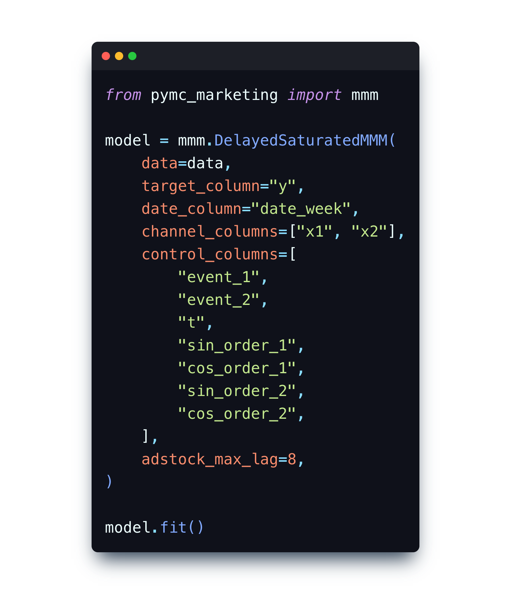

PyMC-Marketing: A Bayesian Approach to Marketing Data Science
PyMC Labs is excited to announce the initial release of PyMC-Marketing

PyMC Labs is excited to announce the initial release of PyMC-Marketing. Unlock the power of marketing analytics with PyMC-Marketing – the open source solution for smarter decision-making. Media mix modelling and customer lifetime value modules allow businesses to make data-driven decisions about their marketing campaigns. Optimize your marketing strategy and unlock the full potential of your customer data.
The world of marketing is constantly changing. With the rise of digital channels, social media, mobile devices, and high-fidelity tracking, marketers had access to a wealth of insightful data. But with the changes in data privacy (GDPR, CCPA, iOS 14.5, and Google’s cookie policy), the way we collect, analyze, and use this data is changing. To stay ahead of the curve, marketers need powerful tools and techniques that can help them make sense of this data and make better decisions. That's where PyMC-Marketing comes in.
What can PyMC-Marketing do?
PyMC-Marketing provides a user-friendly API for working with two key types of models: Media Mix Models (MMM) and Customer Lifetime Value (CLV). Although MMM and CLV are often treated separately, we believe that employing them side-by-side can provide a more complete picture on the short- and long-run return on investment of marketing activities.
Media Mix Models
Since the death of the cookie, it has become very hard, if not impossible to attribute any single sale (or user signup) to a particular advertising channel. You may be spending on various advertising channels like linear TV, different social medias, radio, print etc. But how can you evaluate the effectiveness of these channels in order to intelligently allocate future advertising budgets? This is the goal of Media Mix Models.
When used correctly, MMMs can evaluate channel effectiveness, differentiate changes due to advertising spend, holidays, seasonal trends, or macro-economic factors. Models like this account for the diminishing returns of ad exposure over time, and channel saturation.
üìñ Find out more about Bayesian MMMs in our blog post Bayesian Media Mix Modeling for Marketing Optimization.
PyMC-Marketing focuses on ease-of-use, so it has a simple API which allows you to specify your outcome (e.g. user signups or sales volume), historical advertising spend data, and control variables such as holidays or seasonality:

➡️ Find out more about how to use MMMs to analyze your data in our Example Notebooks documentation.
Customer Lifetime Value
Let's say that you have embraced MMMs and are working towards maximizing new user signups. This is all well and good, but what you really want to do is to acquire more high value customers. But how do you know how valuable different customers are likely to be? You don't know what future business they will generate because it's in the future!
This is where Customer Lifetime Value (CLV) models come in. They are used to predict future purchases and to quantify the long-term value of a customer. PyMC-Marketing's Customer Lifetime Value module includes a range of models, to predict future churn rates, purchase frequency and monetary value of customers.
Again, we have a simple API for Customer Lifetime Value modeling. The example below uses a Beta Geometric (aka BG/NBD) model and we specify customer ID, date of each customer’s first and last purchases as well as number of repeat purchases from each customer.
➡️ Find out more about how to use CLV models and the current features in our Example Notebooks documentation.
Why PyMC-Marketing?
- Open source: PyMC-Marketing is open-source, developed by a team of PyMC Labs researchers and a community of experts. PyMC Labs has deep expertise in building Bayesian models to provide business insights. Pairing that with input from a community with strong applied marketing expertise and experience makes for a winning combination.
- Python: PyMC-Marketing is written in Python, an excellent choice to build a data science stack on due to its popularity, existing use in industry, very large community of Python programmers, and suitability to deploying in production.
- Reliability: PyMC-Marketing places an emphasis on modularity and rigour, ensured by a comprehensive suite of software tests.
- Bayesian: PyMC-Marketing is fully Bayesian, built on top of PyMC, the popular Bayesian statistical modeling package in Python. PyMC itself is well-established, widely-used, road-tested, and has been a NumFOCUS Sponsored Project since 2016.
Why Bayesian?
- Data such as customer transactions and advertising expenditure can be low resolution (e.g. monthly), contain measurement errors, and have missing values. This kind of noisy data environment can be a challenge for traditional methods that rely solely upon data to draw their conclusions.
- Bayesian approaches allow your team’s valuable domain expertise to be incorporated in the modelling process in the form of Bayesian prior beliefs. This can make a massive difference - especially when data are noisy and uncertain. Rather than your model contorting itself in strange ways to best fit complex and noisy data, Bayesian priors can keep your model right, leading to much more sensible insights that fit with your domain expertise.
- Frequentist approaches can require two or more years worth of historical data. Bayesian methods can work with very short-run data, meaning you don't have to wait a long time collecting data before getting insights. The certainty in your estimates will grow as your dataset increases.
- Bayesian modelling excels at modelling hierarchical or nested data. This is particularly useful if you have just launched a new product, or operate in a new region, or are dealing with a new cohort or demographic of customers and don’t have many observations. Bayesian hierarchical models allow information learnt about some categories to intelligently inform you about novel categories.
- Bayesian methods provide the way to make decisions under uncertainty. This enables you to generate and predict future scenarios - knowing how certain or not you are of those predictions. You can run optimization processes to decide what actions to take in the future, fully taking uncertainty into account. This helps manage your risk.
Why embrace open source?
In recent years, there has been a significant shift across many data-intensive industries to build upon open source foundations. There are several advantages in building your marketing data science stack on an open source core:
- Cost savings: Avoid paying for proprietary software licenses.
- Avoid vendor lock-in: Keep flexibility and control, with the ability to switch to other options or to customize your data science models on top of an open-source core.
- Flexibility and customization: Open source software is customizable and can be tailored to meet the specific needs of your business. This allows you to create a data science stack that is uniquely suited to your business and can give you a competitive advantage.
- In-housing: Many companies are increasingly bringing their marketing analytics in-house to gain greater control and customization. Building a data science stack on an open core allows for greater customization and frees up your data science team to focus on tailoring the analytics to the company's requirements instead of spending time on foundational components that already exist elsewhere.
- Innovation: While still an early release, PyMC-Marketing represents our commitment to fostering innovation in the data science and marketing analytics communities. We believe that by embracing open source software, we can collectively advance the field with new tools and techniques. Building your data science stack on an open source core, such as PyMC-Marketing, can provide you with access to the latest developments and improvements as they arise. Join us in our mission to make data science more accessible and powerful for everyone.
- Community support: The Bayesian core of PyMC-Marketing (i.e. PyMC) is supported by a large and active community of developers, who contribute to its development and provide support and guidance to users. This can be invaluable for businesses that don't have the resources to hire their own team of data scientists.
- Talent acquisition and onboarding: Using open source software as a foundation for your data science stack can help attract top talent to your company. Developers and data scientists are often drawn to companies that use cutting-edge tools and contribute to the larger open source community.
üìû Schedule a Consultation
Unlock your potential with a free 30-minute strategy session with our PyMC experts. Discover how open source solutions and pymc-marketing can elevate your media-mix models and customer lifetime value analyses. Boost your career and organization by making smarter, data-driven decisions. Don't wait—claim your complimentary session today and lead the way in marketing and data science innovation.
Want to help?
We are on a journey to make Bayesian Media Mix and Customer Lifetime Value models more accessible and user-friendly to the marketing community.
PyMC-Marketing is still in its early stages of development, and we welcome feedback and contributions from the community. Visit our PyMC-Marketing GitHub repository and get involved!
Find out more
Stay tuned for more information here on the PyMC Labs blog, sign up to our newsletter, follow us on Twitter and LinkedIn, its members, and the PyMC-Marketing contributors.
And check out the package here where you'll find more details, including installation instructions:
- GitHub repository: pymc-labs/pymc-marketing and star the GitHub repo!
- Documentation: pymc-marketing.readthedocs.io
Work with PyMC Labs
If you are interested in seeing what we at PyMC Labs can do for you, then please email info@pymc-labs.io. We work with companies at a variety of scales and with varying levels of existing modeling capacity. We also run corporate workshop training events and can provide sessions ranging from introduction to Bayes to more advanced topics.